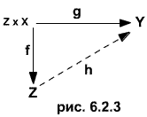
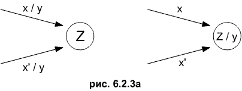

Автоматы Мили представимые как автоматы Мура.
Нашему представлению о способе функционирования автоматов Мура в большей степени отвечает следующее представление о них как о частных случаях автоматов Мили : пусть А - автомат Мура. Положим g ( z, x ) = h ( f ( z, x ) ) для каждого z из Z и каждого x из X. Тогда В = ( Z, X, Y, f, g ) - автомат Мили, который для всех непустых входных последовательностей порождает такие же выходные последовательности, как и автомат А, если, конечно, не учитывать самый первый выход автоматат А. Следует отметить, что при переходе от автоматов одного вида к автоматам другого вида необходимо изменение содержательных представлений, используемых при определении состояний автоматов.
И наоборот, можно сказать, что автомат Мили В = ( Z, X, Y, f, g ) представим как автомат Мура, если существует отображение h такое, что диаграмма на рис. 6.2.3 является коммутативной.

Действительно, в этом случае из равенства
f ( z, x ) =
f ( z', x'
) при произвольных z и
z' из Z и
произвольных x и x'
из X вытекает равенство
g ( z, x ) =
g ( z', x' ). Поэтому на всех
ребрах, входящих на графе автомата B в одну
вершину (состояние), должен быть указан один и тот же выход. Присоединяя
этот выход к данному состоянию (рис. 6.2.3а), получаем автомат Мура
A ( Z, X, Y, f, h ), который (если не учитывать его первый выход)
имеет такое же входно-выходное поведение, как и автомат
B.
